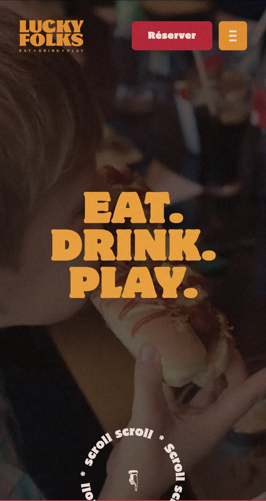

Repetition
Letterboxd
https://letterboxd.com
Letterboxd makes good use of repetition by using consistently the same colors and styles on the different elements across their website. They employ the same patterns for each section to clearly separate them. We can see it in the example above with the way the tab menu and its various elements are shown; it remains consistent and distinct from the rest. We can also observe it in how each movie poster is displayed; they all have the same size and are arranged in rows and colons. Finally, we can oberve repetition in the font styles and color. These various repetitions create a consistent look to the webpage and makes it easier to display plenty of information without making it overwhelming.
Contrast
Code Academy
https://www.codecademy.com
On their website, CodeAcademy makes good use of contrast. They use complementary colors and shades to highlight the most important elements. In the example above our eyes a naturally drawn to the interactive elements of the page. The yellow button immediately catches our attention because it stands out the most in the layout. We feel tempted to click on it. We are also driven to the vertical carousel since it contrasts with the rest of the design due to its usage of distinct colors and style. There is also a good use of contrast with the text. It stands out because of the background colors used in each section: there is white text with a colorful background and dark text with a white background.The use of contrast on this page creates a design that is accessible, easy to read and navigate, and helps to establish hierarchy.
Visual Hierarchy
Lucky Folks
https://www.luckyfolks.fr
On their website, LuckyFolks uses colors, contrast, and font sizes to create a hierarchy. Our eyes are drawn to the colorful areas, where the assorted colors establish the principal elements of the website. Even with the absence of background color, we can easily locate the navigation bar with its use of pattern and icons. Because of its size, the first thing that catches our attention is the text in the center of the page. It conveys the page's message, and brand uniqueness, in this case food and games. Additionally, it aids in our ability to visualize the background video, which plays scenes of the restaurant and gives us a desire to be there! The reservation button stands out in the navigation bar due to its color and contrast with the page, creating a sense of importance. Finally, an animation is added at the bottom of the screen, in a distinct color than the rest, to indicate guide you into the rest of the website. Despite being at the bottom of the design hierarchy due to its disposition and color, the animation makes it entertaining and encourages you to continue your visit.